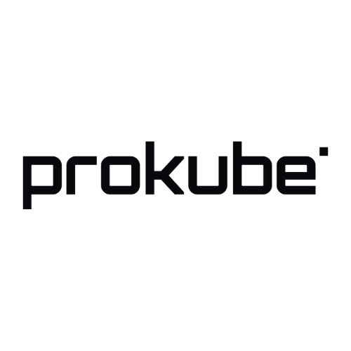

We enable advanced AI capabilities for digital systems that integrate physical processes. From manufacturing and production to complex cyber-physical environments, we build intelligent systems that drive performance and innovation.

With SelfX, we gained real-time insight into production KPIs and automated detection of operational issues.
AI4CPS helped us modernize our infrastructure with a scalable Kubernetes-based architecture and reliable monitoring and data management.

Using SelfX, we enhanced diagnostics across our space systems, achieving measurable improvements in safety and reliability.
After defining suitable production KPIs for our clients, we apply an AI technique to MES- and Control data to optimize production scheduling and other decision-making strategies.
Via continuous evaluation of system components' condition using AI-driven models, we achieve predictive maintenance and minimize unexpected system downtime.
When problems occur in your system, we use AI to localize and diagnose the root causes enabling effective threatment of the problem.
Scenario-based what-if analysis for confident decision making based on the expert-based and ML-based models of your system.
Using tools for graphing and other plotting, we support your experts in deriving conclusions and informing themselves about the ongoing processes.
Increased production throughput by 8.3% using AI-driven scheduling of industrial robots' actions and optimization based on article contexts.
Implemented the anomaly detection and condition monitoring solution, reducing unexpected equipment failures by approximately 20%.
Implemented a recomendation system in SelfX for online analysis of system health and recomendation of system reconfiguration scenarios.
Analysis of your production systems, integration of relevant data sources, development of tailored AI models, and implementation into existing IT and OT infrastructures.
Our proprietary AI software SelfX is seamlessly integrated into your industrial environment and supports operational decision-making in near real time.
After successful implementation, fees are based solely on a transparent software license — predictable, scalable, and efficient in the long term.
See how SelfX analyzes industrial data streams, detects inefficiencies, and provides transparent explanations for process optimization.
The people behind AI4CPS and SelfX, combining expertise in AI, industrial systems, and software engineering.

Commercial Lead
Co-Founder
Drives partnerships and market strategy, connecting industrial challenges with practical AI solutions.

Solutions Architect
Co-Founder
Combining research in AI for cyber-physical systems with experience building industrial data platforms.
For additional expertise and scientific research, we collaborate closely with applied research groups at leading institutions.

Discover how SelfX can transform your facility. In a short 20-minute demo, we show how SelfX identifies inefficiencies, explains root causes, and helps optimize industrial processes.
We will contact you within 24 hours to schedule the demo.